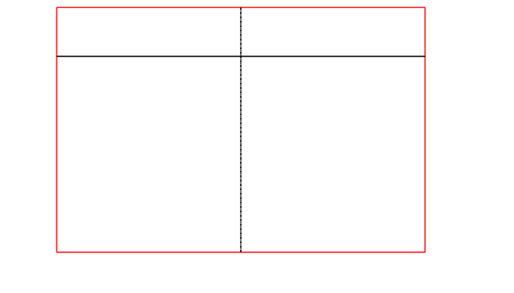

LFO - Low Frequency
Optimizer
Benutzerhandbuch
Inhaltsverzeichnis
Diese Anwendung ermöglicht die Berechnung und Visualisierung der tieffrequenten Schallausbreitung von Lautsprechern.

Hinweis: Dieses Handbuch führt Sie durch die wichtigsten Funktionen der Anwendung. Für detaillierte Informationen zu spezifischen Funktionen konsultieren Sie bitte die entsprechenden Abschnitte.
2.1 Programmstart
Nach dem Start des Programms sehen Sie die Hauptansicht mit mehreren Bereichen:
· SPL Plot: 3D-Darstellung des Schalldruckpegels
· Y-Axis Plot: Schnittansicht entlang der Y-Achse
· X-Axis Plot: Schnittansicht entlang der X-Achse
· Polar Pattern: Polardiagramm der Schallverteilung
2.2 Menüstruktur
Die Anwendung verfügt über folgende Hauptmenüs:
· File: Dateioperationen (Neu, Öffnen, Speichern)
· Setup: Einstellungen und Konfiguration
· Window: Verwaltung der Fenster und Ansichten
· Calculation: Berechnungsmodi und -optionen

3.1 Neue Datei erstellen
Erstellen Sie eine neue Projektdatei über File → New oder mit der Tastenkombination Ctrl+Shift+N.
3.2 Datei öffnen
Öffnen Sie eine gespeicherte Projektdatei über File → Open oder mit Ctrl+O.
3.3 Datei speichern
Speichern Sie Ihre Arbeit mit File → Save (Ctrl+S) oder als neue Datei mit File → Save as (Ctrl+Shift+S).
Tipp: Speichern Sie regelmäßig Ihre Arbeit, um Datenverlust zu vermeiden.
4.1 Quellen-Fenster öffnen
Öffnen Sie das Quellen-Verwaltungsfenster über Window → Sources oder mit Ctrl+Alt+S.
4.2 Lautsprecher hinzufügen
Im Quellen-Fenster können Sie:
· Neue Lautsprecher hinzufügen
· Positionen definieren
· Lautsprecherdaten importieren
· Bestehende Quellen bearbeiten
4.3 Lautsprecherdaten verwalten
Verwenden Sie Setup → Manage Speaker (Ctrl+Alt+M), um Lautsprecherdaten zu importieren, zu exportieren oder zu generieren.
5.1 Berechnung starten
Starten Sie eine Berechnung mit dem Calculate-Button oder der Taste C.
5.2 Berechnungsmodi
Unter Calculation stehen verschiedene Modi zur Verfügung:
· SPL Plot: Standard-Schalldruckpegel-Darstellung
· Phase alignment: Phasenausrichtung
· SPL over time: Zeitabhängige SPL-Darstellung
5.3 Berechnungseinstellungen
Passen Sie die Berechnungsparameter über Setup → Preferences (Ctrl+-) an.
6.1 3D-Plot Interaktion
Im 3D-SPL-Plot können Sie:
· Mit der Maus rotieren (linke Maustaste)
· Zoomen (Mausrad)
· Verschieben (rechte Maustaste oder Shift + linke Maustaste)
6.2 Ansichten fokussieren
Verwenden Sie die folgenden Tastenkombinationen, um bestimmte Ansichten zu fokussieren:
· Ctrl+1: Focus SPL
· Ctrl+2: Focus Yaxis
· Ctrl+3: Focus Xaxis
· Ctrl+4: Focus Polar
· Ctrl+5: Default View
6.3 Overlays und Einstellungen
Im 3D-Plot können verschiedene Overlays aktiviert werden:
· Achsen-Overlays
· Impuls-Overlays
· Oberflächen-Overlays
Hinweis: Die Transparenz der Achsen-Overlays kann in den Einstellungen angepasst werden.
Aktion | Tastenkombination |
Neue Datei | Ctrl+Shift+N |
Datei öffnen | Ctrl+O |
Speichern | Ctrl+S |
Speichern als | Ctrl+Shift+S |
Berechnung starten | C |
Einstellungen | Ctrl+- |
Quellen-Fenster | Ctrl+Alt+S |
Impuls-Fenster | Ctrl+Alt+I |
Surface-Fenster | Ctrl+Alt+P |
Focus SPL | Ctrl+1 |
Focus Yaxis | Ctrl+2 |
Focus Xaxis | Ctrl+3 |
Focus Polar | Ctrl+4 |
8.1 Optimale Arbeitsweise
· Definieren Sie zuerst Ihre Quellen und deren Positionen
· Laden Sie die entsprechenden Lautsprecherdaten
· Konfigurieren Sie die Berechnungsparameter
· Führen Sie Testberechnungen durch, bevor Sie komplexe Szenarien berechnen
8.2 Performance-Optimierung
Für große Berechnungen können Sie die Berechnungsauflösung in den Einstellungen anpassen, um die Berechnungszeit zu verkürzen.
8.3 Visualisierung
Experimentieren Sie mit verschiedenen Overlays und Ansichten, um die besten Einblicke in Ihre Daten zu erhalten.
Wichtig: Bei sehr großen Datenmengen kann die Visualisierung Zeit in Anspruch nehmen. Haben Sie Geduld oder reduzieren Sie die Auflösung.